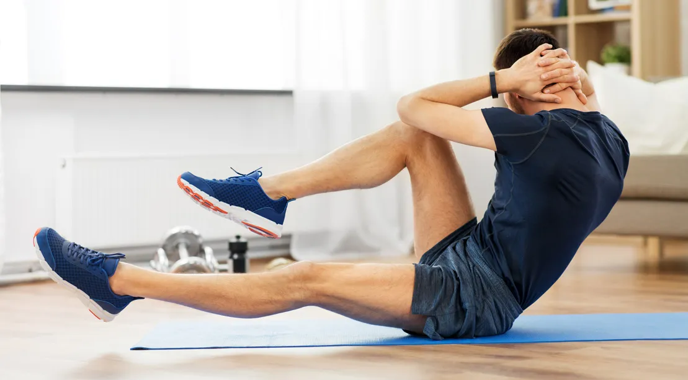

Abs Workout Routine
Sit-ups
Sets: 3
Reps: 15-20
Explanation: Sit-ups target the upper and lower abdominal muscles. Lie on your back with your knees bent and your feet anchored, place your hands behind your head or across your chest, and lift your upper body towards your knees, then lower back down.
Lying Leg Raises

Sets: 3
Reps: 15-20
Explanation: Lying leg raises target the lower abdominal muscles. Lie on your back with your legs straight, lift your legs until they are perpendicular to the floor, then lower them back down without touching the ground.
V-ups
Sets: 3
Reps: 10-15
Explanation: V-ups target the entire abdominal area. Lie on your back with your legs straight and your arms extended overhead, lift your legs and upper body simultaneously to form a V shape, reaching your hands towards your feet, then lower back down.
Seated Leg Tucks
Sets: 3
Reps: 15-20
Explanation: Seated leg tucks target the lower abdominals and hip flexors. Sit on the edge of a bench or chair with your hands gripping the sides, lean back slightly, bring your knees towards your chest while contracting your abs, then extend your legs back out without touching the ground.
Toe Touches
Sets: 3
Reps: 15-20
Explanation: Toe touches target the upper abdominal muscles. Lie on your back with your legs extended straight up towards the ceiling, reach your hands towards your toes by lifting your shoulders off the ground, then lower back down.
Crunches
Sets: 3
Reps: 15-20
Explanation: Crunches target the upper abdominal muscles. Lie on your back with your knees bent and your feet flat on the ground, place your hands behind your head, and lift your shoulders towards your knees, then lower back down.